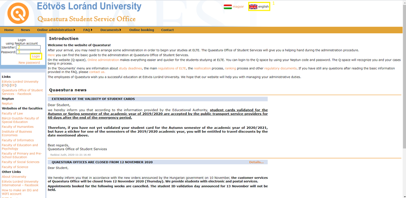
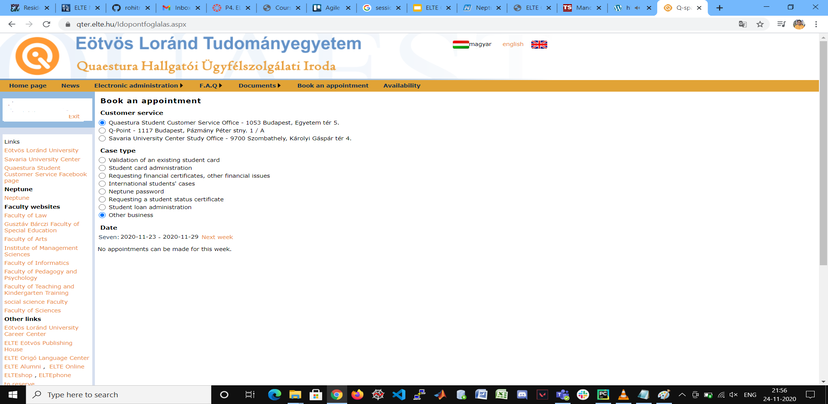

After your arrival, you may need to arrange some administration in order to begin your studies at ELTE. The Quaestura Office of Student Services will give you a helping hand during the administration procedure.
Here you can find the basic guide to the administration at Quaestura Office of Student Services.
Queastura office provides students with online and offline services such as:
1. Student ID card management
2. Acceptance of Student Loan Contract
3. Providing the Neptun code/user name and password for students and professors
4. Posting service: forgotten Neptun password; temporary student certificate; validated plastic student card, certificate of student status
5. Health insurance management (for third country internationals Generali studium; for Stipendium Hungaricum students Generali health insurance and TAJ card)
6. Providing information regarding Finance
7. Providing Student Certificate
Correcting personal data in the Neptun system.
Transmission of the contracts of the Career Centre of ELTE.
In order to benefit from these services, you need to log into the platform with your neptune id email adress and your password as well.
Here's the link to Queastura office web site
Warning! Due to covid-19 pandemic Queastura office is temporarily closed for savety measuremants.
Informations about Queastura office QUAESTURA OFFICE IN THE CITY: Adress: 1053 Budapest, Egyetem tér 5. Phone:+36-1-411-6500/8253 Mailing address: 1364 Budapest Pf. 109 Email-Address: quaestura@elte.hu
Queastura Office AT THE LÁGYMÁNYOS CAMPUS: Adress: 1117 Budapest, Pázmány Péter sétány 1/A, first floor gallery of the Northern Block) Email-Adress:quaestura@elte.hu
Credentials needed to sign in to the application:
Neptun ID
Password - The respective password for your Neptun ID.
Step 1
Step 2
